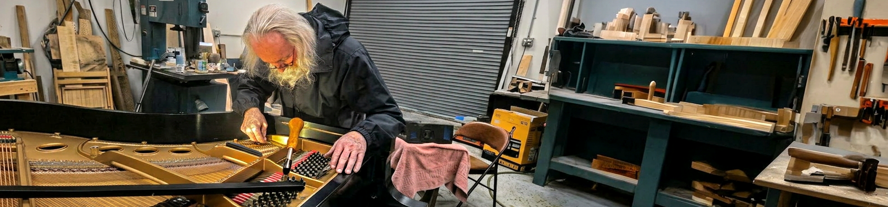
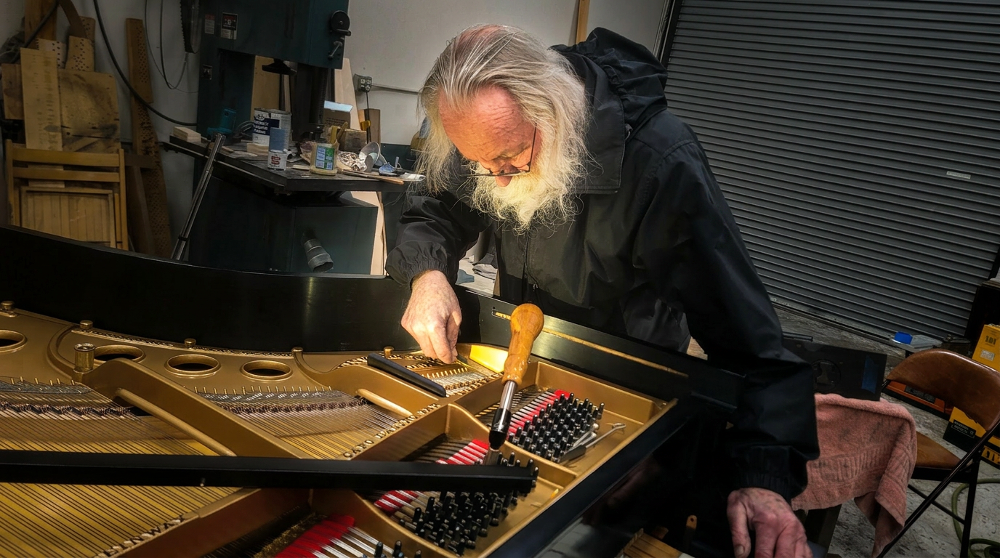
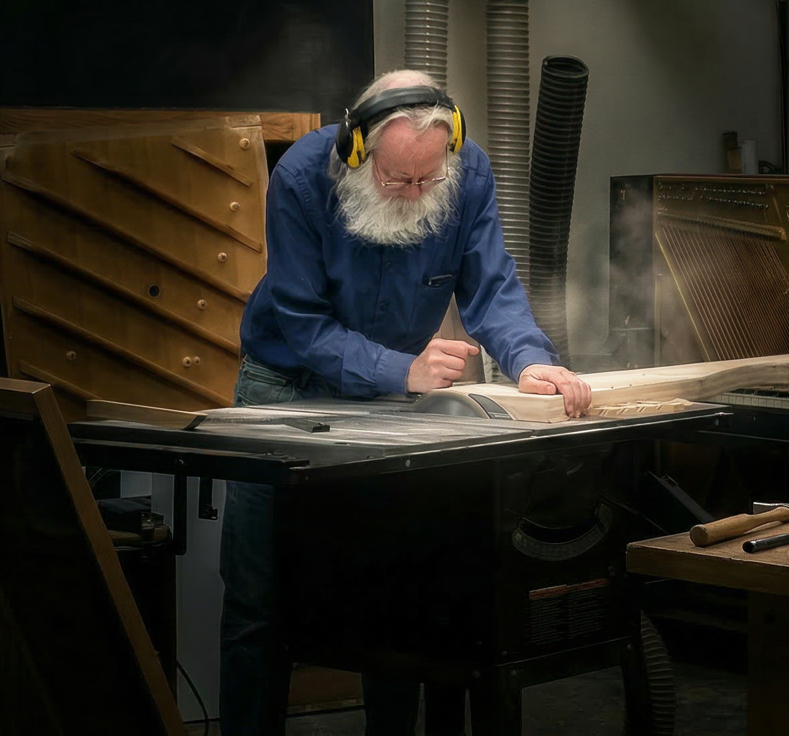

Ed McMorrow's approach to piano tone begins with a fundamental insight: the piano is a singing instrument. Every note contains three distinct tonal voices that together create the piano's full, complex sound.
Understanding these voices and how they interact across the keyboard compass is the foundation of everything Ed does. His Musical Instrument as Singer (MIS) model guides every decision in the rebuilding process, from hammer weight to string scaling to duplex bridge placement.
The tenor range of the piano, where the instrument most closely resembles the human singing voice. This is where the piano's emotional core lives, where melody is most naturally expressed and where tonal balance matters most.
The upper register, where the piano produces bright, clear, singing tones. Proper hammer weight and string termination in this range create a treble that sparkles without becoming brittle or harsh.
The bass register, where the piano produces deep, resonant, organ-like tones. The interaction between fundamental frequencies and their overtones creates the richness and warmth that distinguishes a fine piano from an ordinary one.
Ed's signature procedure develops dynamic tone and ideal musically ergonomic feel by adjusting hammer weight in relation to action leverage. The result is a lighter, more responsive touch that translates the pianist's expression with uncommon fidelity while nearly eliminating key weights. The Piano Technicians Journal called this work "particularly profound."
Ed's U.S. patent-pending innovation controls beating interactions between longitudinal and transverse modes while optimizing pivot string termination conditions across the keyboard compass. Published in the Piano Technicians Journal, March 2013.
A protocol using softer wires from makers like Paulello and Pure Sound to modify scale breaks and better control troublesome longitudinal modes. This approach allows Ed to fine-tune the tonal character of each register with precision that conventional wire cannot achieve.
A tuning system designed for use with electronic tuning instruments that serves as an analog of the beat-rate feedback loops used in the finest aural tuning techniques. This bridges the precision of digital tools with the musicality of traditional methods.

Over a range of dynamic levels the piano's tone was even, full-bodied and orchestral sounding without ever becoming strident even at fff. All in all a marvelous piano now.Lee Sumner
Manager, Acoustic Piano Component
Prosser Piano & Organ Co., Seattle, WA
on Ed's remanufactured Mason & Hamlin BB with Fully Tempered Duplex Scale
